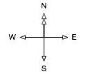
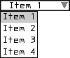

Summary
GLV (Graphics Library of Views) is a GUI building toolkit written in C++ for Linux, OSX, and Win32. GLV is specifically designed for creating interfaces to real-time, multimedia applications using hardware accelerated graphics. GLV is designed to be lightweight and modular so as to make it easy to integrate with existing projects. Its only dependency is OpenGL. Although windowing is technically not a part of GLV, it does provide an abstraction layer for creating bindings to a particular windowing system for creating an OpenGL context and getting mouse and keyboard input. A binding to GLUT is currently provided.
GLV observes a very minimal rectilinear design. Not only does this result in a straightforward presentation, but also optimizes many aspects of the underlying rendering system, such as number of vertices used, hit detection, and view cropping, making it run more efficiently.
The main View class provides a common interface that all other widgets inherit from. There is no concept of "leaf" or "composite" views, as typically seen in other GUI toolkits, making the API easier to learn and extend. A unique feature of Views is that they support both early- and late-bound event handlers. Furthermore, each View can contain multiple late-bound event handlers per event type. This provides a general model for extending the behavior of Views, such as adding mouse-controlled translation or resizing to any View.
GLV observes a very minimal rectilinear design. Not only does this result in a straightforward presentation, but also optimizes many aspects of the underlying rendering system, such as number of vertices used, hit detection, and view cropping, making it run more efficiently.
The main View class provides a common interface that all other widgets inherit from. There is no concept of "leaf" or "composite" views, as typically seen in other GUI toolkits, making the API easier to learn and extend. A unique feature of Views is that they support both early- and late-bound event handlers. Furthermore, each View can contain multiple late-bound event handlers per event type. This provides a general model for extending the behavior of Views, such as adding mouse-controlled translation or resizing to any View.
Screenshots
{kind=link}
{kind=link}
Download
Releases
Source Repository
Obtain the latest source code from the GLV GitHub page.
License
Copyright (C) 2006-2008. The Regents of the University of California (REGENTS). All Rights Reserved. Permission to use, copy, modify, distribute, and distribute modified versions of this software and its documentation without fee and without a signed licensing agreement, is hereby granted, provided that the above copyright notice, the list of contributors, this paragraph and the following two paragraphs appear in all copies, modifications, and distributions. IN NO EVENT SHALL REGENTS BE LIABLE TO ANY PARTY FOR DIRECT, INDIRECT, SPECIAL, INCIDENTAL, OR CONSEQUENTIAL DAMAGES, INCLUDING LOST PROFITS, ARISING OUT OF THE USE OF THIS SOFTWARE AND ITS DOCUMENTATION, EVEN IF REGENTS HAS BEEN ADVISED OF THE POSSIBILITY OF SUCH DAMAGE. REGENTS SPECIFICALLY DISCLAIMS ANY WARRANTIES, INCLUDING, BUT NOT LIMITED TO, THE IMPLIED WARRANTIES OF MERCHANTABILITY AND FITNESS FOR A PARTICULAR PURPOSE. THE SOFTWARE AND ACCOMPANYING DOCUMENTATION, IF ANY, PROVIDED HEREUNDER IS PROVIDED "AS IS". REGENTS HAS NO OBLIGATION TO PROVIDE MAINTENANCE, SUPPORT, UPDATES, ENHANCEMENTS, OR MODIFICATIONS.
Resources
GLV mailing list
API reference v0.96 (HTML)
Tutorial v0.96 (PDF)
MAT/AlloSphere summer 2010 workshop handout (PDF)
API reference v0.96 (HTML)
Tutorial v0.96 (PDF)
MAT/AlloSphere summer 2010 workshop handout (PDF)
Core
Rect
| Rect is a geometry base class that all Views inherit from. It represents a rectangular object with data members to describe its position and extent in pixels. Its position is stored as the coordinate of its top-left corner on a cartesian grid with positive x going right and positive y going down. |
Rect r1(10, 5, 100, 50); // rectangle with l=10, t=5, w=100, h= 50 Rect r2(100, 50); // rectangle with l= 0, t=0, w=100, h= 50 Rect r3(100); // square with l= 0, t=0, w=100, h=100
Rect has methods for changing its position and extent and multiple methods for getting its right edge, bottom edge, center points, area. There is also a method to determine whether the Rect contains an x-y coordinate. This can be used, for instance, to check if a Rect has been clicked on in the window.
View
A View is a Rect that has one or more drawing routines and event handlers, and properties for being a node in a tree of Views. Every View has a virtual onDraw() method that gets called every frame. This method contains the View's specific OpenGL commands to display it on screen.
A View contains four View references, parent, child, left sibling, and right sibling, that enable it to be a node in a tree structure. This is the main basis for how Views are organized spatially and behaviorally within a top-level View.
Views are rendered by traversing the View tree pre-order calling each View's onDraw() method, starting at the root (window) View. This means that the root View's onDraw() gets called first, then, recursively, the children followed by their siblings.

The code to produce this hierarchy is as follows:
View has the following enumerated property bit flags:
A View can also reposition or resize itself automatically when its parent resizes. These capabilities are controlled through its anchor() and stretch() methods. In the most general case, anchor and stretch factors can be specified in each dimension as floating-point values between 0 and 1. The factors determine how much of the parent's resize amount is added to the view's position and extent. The following figures illustrate how a child view (C) behaves when its parent (P) is resized by dx and dy.
The code to produce this hierarchy is as follows:
// Create the Views View v1; // top parent View View v11, v12; // 2nd level Views View v121, v122; // 3rd level Views // Create the tree hierarchy v1 << v11 << (v12 << v121 << v122);The << operator adds its right operand as a child to the left operand. The operator returns the parent View, so that multiple children can easily be added using method chaining.
View has the following enumerated property bit flags:
Visible // Whether to draw myself DrawBack // Whether to draw back rect DrawBorder // Whether to draw border CropChildren // Whether to crop children when drawing CropSelf // Whether to crop own drawing routine(s) Focused // Whether View is focused FocusHighlight // Whether to highlight border when focused HitTest // Whether View can be clicked Controllable // Whether View can be controlled through eventsThe properties can be interfaced to through several methods:
View v;
v.enable(Visible); // enable a property
v.disable(DrawBack); // disable a property
v.enable(DrawBorder | CropSelf | HitTest); // enable multiple properties
v.toggle(Visible); // toggle a property
v.property(DrawBack, true); // set property using a boolean
if(v.enabled(Visible)){...} // check if a property is enabled
A View can also reposition or resize itself automatically when its parent resizes. These capabilities are controlled through its anchor() and stretch() methods. In the most general case, anchor and stretch factors can be specified in each dimension as floating-point values between 0 and 1. The factors determine how much of the parent's resize amount is added to the view's position and extent. The following figures illustrate how a child view (C) behaves when its parent (P) is resized by dx and dy.
|
Resize behavior with various
x, y anchor factors |
Resize behavior with various
x, y stretch factors |
Place
| Place is an enumeration namespace for specifying specific points on a rectangle. The defined types are TL, TC, TR, CL, CC, CR, BL, BC, BR where T = top, B = bottom, L = left, R = right, and C = center. These are primarily used for positioning views and specifying parent anchoring points. |
Direction

Direction is an enumeration namespace for specifying a direction. The defined types are N, E, S, and W. The convention used in GLV is that north points to the top of the screen and east to the right of the screen. Directions are used primarily for specifying the placement flow of layout managers.
Color
The Color class stores colors as their constituent red, green, blue, and alpha (RGBA) components. Colors can be created in several ways:
There is a lightweight HSV struct defined to allow working within the HSV color space. Colors can be constructed with this alternate syntax:
Likewise, we can set and get a color's HSV values:
HSV also has a special constructor to allow a short-hand method of getting a color's HSV values.
Color c1(0, 1, 0); // green (alpha = 1) Color c2(0, 0, 1, 0.5); // blue with alpha Color c3(0.5); // grey scale
There is a lightweight HSV struct defined to allow working within the HSV color space. Colors can be constructed with this alternate syntax:
Color c(HSV(0.5, 1, 1)); // create a new color from HSV values c.print(); // prints [0.00 1.00 1.00 1.00]
Likewise, we can set and get a color's HSV values:
Color c; // create a new color
c = HSV(0.5, 1, 1); // set its RGB components from HSV values
c.print(); // prints [0.00 1.00 1.00 1.00]
HSV h; // create a new HSV struct
h = c; // convert color's RGB components to HSV
printf("[%g %g %g]", h.h, h.s, h.v); // prints [0.5 1 1]
HSV also has a special constructor to allow a short-hand method of getting a color's HSV values.
Color c(HSV(0.5, 1, 1));
HSV h(c); // create a new HSV struct from a color
printf("[%g %g %g]", h.h, h.s, h.v); // prints [0.5 1 1]
Callback System
A View can handle callbacks through virtual methods and/or function pointers. Upon receipt of an event, a View's virtual methods are called, then its list of function pointers, if populated.
A View can receive any of the following events of type of Event::t:
Quit FocusGained MouseDown KeyDown FocusLost MouseUp KeyUp MouseMove KeyRepeat MouseDrag MouseWheelA View's virtual methods are:
virtual void onDraw(); virtual bool onEvent(Event::t e, GLV& glv); virtual void onResize(space_t dx, space_t dy);The function pointer types are:
typedef bool (*eventCallback)(View * v, GLV& glv); typedef void (*drawCallback)(View * v);Virtual methods can be overridden by subclasses to customize their behavior. The following example shows skeletal code for a View subclass defining its own callbacks.
class SubView : public View{
public:
virtual void onDraw(){
}
virtual bool onEvent(Event::t e, GLV& glv){
switch(e){
case Event::MouseDrag: return false;
case Event::MouseDown: return false;
case Event::KeyDown: return false;
}
return true; // bubble unrecognized events to parent
}
virtual void onResize(space_t dx, space_t dy){
}
};
A View also has a single pointer to a drawCallback type and a map of eventCallback lists. A View's function pointer type callbacks are called after its virtual callbacks. The event callbacks are special in that one or more can be added per event type. View has an overloaded, chainable function operator defined to simplify appending event callbacks.
View view; // append mouse dragging behaviors to view view (Event::MouseDrag, mouseMove) (Event::MouseDrag, mouseResize);
GLV
The GLV class acts as a top-level View as well as a bridge to a windowing system. This class handles the drawing of the View hierarchy and distributes mouse and keyboard events from the window to its descendents. A GLV class is usually constructed with a static drawing callback.
void drawCB(View * v){
// v is a pointer to a GLV
}
GLV top(drawCB);
The GLV class contains objects with the current keyboard and mouse state that can be accessed from event and drawing callbacks.
Keyboard
This is a class used to store the current state of the keyboard. The state includes the key code of the last key pressed, whether it was pressed or released, and the state of modifier keys shift, control, and alt.
Printable keyboard keys can be referenced by their non-shifted ASCII character. For non-printable keys, there exists a Key::t type with the following types:
Printable keyboard keys can be referenced by their non-shifted ASCII character. For non-printable keys, there exists a Key::t type with the following types:
Enter F{1-12} PageDown
BackSpace Insert PageUp
Tab Left End
Return Up Home
Escape Right
Delete Down
Here is a skeleton code illustrating how to map key events to various actions, such as inside a callback:
switch(keyboard.key()){
case 'b': break;
case ' ': break;
case Key::Escape: break;
case Key::F5: break;
};
Mouse
This is a class used to store the current state of the mouse. The state includes its buttons' state, coordinates relative to the window, coordinates relative to its listener, coordinates relative to the window when each button was pressed, mouse wheel position, and velocity and acceleration in the x and y directions.
Notifications
All GLV Views inherit a Notifier class so they can operate as the subject of one or more observers. The principle of operation is for a Notification object to be passed from the sending object (subject) to the receiving objects (observers). The Notification holds pointers to the sender, receiver, and optional data and is handled by a user-defined callback function. This is used primarily for sending out notifications when a widget changes its value. For instance, we may want to update a label according to the value of a slider:
// Notification callback
void sliderUpdateLabel(const Notification& n){
Label& l = *n.receiver<Label>();
SliderChange& v = *n.data<SliderChange>();
char buf[16];
snprintf(buf, sizeof(buf), "[%2d] = %4.2f", v.index(), v.value());
l.label(buf);
}
int main(){
Slider slider;
Label sliderLabel;
// Notify the label whenever the slider value is updated.
slider.attach(sliderUpdateLabel, Update::Value, &sliderLabel);
}
All widgets have specific ChangedValue types that are sent with the notification. A ChangedValue holds a generic value type and an index number. To simplify casting the data pointer in the notification, the following typedefs are defined:
typedef ChangedValue<bool> ButtonChange; typedef ChangedValue<std::string> LabelChange; typedef ChangedValue<double> NumberDialerChange; typedef ChangedValue<float> SliderChange;
Window/Application
Optionally, the Window class provides an operating system window with an OpenGL context. The provided implementation binds to GLUT, but bindings to other APIs are supported. The Window holds a pointer to a GLV context. The code for setting up a window typically looks like this:
GLV top(drawCB); Window win(400, 300, "GLV Window", &top);The Application class is responsible for starting the main application event loop. Application::run() is called after setting up the GUI code.
Draw
The drawing namespace, draw::, consists of a minimal wrapper around the OpenGL API, shape drawing routines, and vector-based text rendering. The following functionalities exist only for convienence, as direct OpenGL calls can still be used, e.g., when creating custom widgets.
The draw:: namespace also has a function for rendering simple text to the screen. The text renderer uses an internal fixed-width vector font with each character defined on an 8x11 unit grid. The cap lies at 0 units and the baseline at 8 units. In general, characters are rendered with the minimal number of vertices that does not sacrifice their readability and distinction from others. The text rendering mechanism is not meant to be comprehensive, but to be quick and easy without requiring dependencies on external libraries or font files.
A text string can be rendered using one line of code:
In this example, the text is drawn with its left edge at 0 and letter cap at 0. Text strings with new lines, \n, and tabs, \t, are also handled properly by the renderer.
Rendering Commands
The draw:: rendering commands use the same syntax as OpenGL, but drop the "gl" prefix for clarity. The currently implemented OpenGL subset is:
Rendering Commands:
The following example shows how rendering commands would be used to draw a 3D scene in a View's onDraw() method.
| Primitives: | Capabilities: | Attributes: | Matrix Modes: |
LineLoop LineStrip Lines Points TriangleFan TriangleStrip Triangles QuadStrip Quads |
Blend DepthTest LineSmooth LineStipple PolygonSmooth ScissorTest |
ColorBufferBit DepthBufferBit ViewPortBit |
Model Projection Texture |
Rendering Commands:
begin identity pop2D rotate clear lineStipple pop3D scale clearColor lineWidth popAttrib scissor color matrixMode push translate disable ortho push2D vertex enable pointSize push3D viewport end pop pushAttrib
The following example shows how rendering commands would be used to draw a 3D scene in a View's onDraw() method.
void onDraw(){
using namespace draw; // implicitly use draw:: in this scope
push3D(w, h); // push into 3-D mode passing in width and height of view
translate(tx, ty, tz); // transform model matrix
rotate(rx, ry, rz); //
scale(sx, sy, sz); //
// draw axes of cartesian space
begin(Lines);
color(1, 0, 0); // set color to red
vertex(0,0,0); vertex(1,0,0); // draw +x-axis
color(0, 1, 0); // set color to green
vertex(0,0,0); vertex(0,1,0); // draw +y-axis
color(0, 0, 1); // set color to blue
vertex(0,0,0); vertex(0,0,1); // draw +z-axis
end();
pop3D(); // pop out of 3-D space
}
Symbols
The draw:: namespace has several functions for drawing symbols for buttons, scrollbars, menus, etc. The functions follow the format:
void symbolName(float l, float t, float w, float h);The following are images/names of the currently implemented symbols.
|
triangleL triangleR triangleU triangleD |
check frame minus  plus plus |
rect x |
Text
Font character metrics
Printable character set
A text string can be rendered using one line of code:
draw::text("Amazingly few discotheques provide jukeboxes.");
In this example, the text is drawn with its left edge at 0 and letter cap at 0. Text strings with new lines, \n, and tabs, \t, are also handled properly by the renderer.
Widgets
Button
off
on
Buttons
The Buttons widget is an extremely flexible N x M button array. It can be used to create menus, radio buttons, and button matrices, for example. Buttons can be either in mutually exclusive mode or not. When in mutually exclusive mode, only one button can be on at a time. Otherwise, any number of buttons can be on or off at a time.
|
1x4 radio bar
|
4x1 radio bar
|
4x4 button matrix
|
ColorPicker
DropDown

DropDown is a no-frills drop-down menu of text strings. Items can be selected using either mouse or keyboard interaction.
Label
ListView
NumberDialer(s)
NumberDialer
NumberDialers (4x3)
Plot
Plot permits graphing of data in one or two dimensions. To each Plot can be attached one or more Plottables for presenting data in a particular way. The provided Plottables are PlotFunction1D, PlotFunction2D, and PlotDensity.
|
1D plots
|
2D plot
|
Density plot
|
Slider
vertical
(signed)
(signed)
vertical
horizontal
horizontal
(signed)
(signed)
Clicking on the slider with the left mouse button will set its absolute position. Dragging with the left or right mouse button will increment the slider's value. Normally, the amount the slider moves is in a one-to-one correspondence to the mouse cursor position. However, if both mouse buttons are held while dragging, the slider is incremented by a quarter of the distance the mouse moves.
SliderRange
Slider2D
Mouse interaction along each axis of Slider2D is the same as with the Slider widget.
Sliders
10 vertical
10 horizontal
Mouse interaction with individual sliders is the same as the Slider widget.
SliderGrid
3-D
4-D
Mouse interaction within cells is the same as with the Slider2D widget.
TextView
View3D
Layout
Placer
Placer is used to position a sequence of elements relative to each other, at absolute positions, or a combination of both. Placer holds relative increment factors and absolute increment amounts for both the x and y directions, thus making it an extremely flexible layout positioner.
In the simplest case, elements can be arranged so that their absolute positions are a fixed distance apart. This is done by using relative increment factors of zero and absolute increment amounts equal to the distance.
Another use of Placer is to position a sequence of views with a fixed amount of padding between them. In this case, the relative increment factor is set to 1, while the absolute increment is set to the desired padding amount. The following example positions elements going east with a padding of 1.
In the previous example, the alignment was set to the top-left corner. By setting the alignment property of Placer, views can be aligned from different places.
Arrangement using center-left alignment:
Arrangement using bottom-left alignment:
In the simplest case, elements can be arranged so that their absolute positions are a fixed distance apart. This is done by using relative increment factors of zero and absolute increment amounts equal to the distance.
View top; View v1(Rect(6)), v2(v1), v3(Rect(4)), v4(Rect(10,8)); // args: (absolute x-increment, absolute y-increment) Placer placer(8, 0); placer << v1 << v2 << v3 << v4;This results in the arrangement:
Another use of Placer is to position a sequence of views with a fixed amount of padding between them. In this case, the relative increment factor is set to 1, while the absolute increment is set to the desired padding amount. The following example positions elements going east with a padding of 1.
View top; View v1(Rect(6)), v2(v1), v3(Rect(4)), v4(Rect(10,8)); // args: (parent view, flow direction, align place, initial x, initial y, padding) Placer placer(top, Direction::E, Place::TL, 0,0, 1); placer << v1 << v2 << v3 << v4;This results in the arrangement:
In the previous example, the alignment was set to the top-left corner. By setting the alignment property of Placer, views can be aligned from different places.
Arrangement using center-left alignment:
Arrangement using bottom-left alignment:
Table
Table is used for doing general rectangular layouts on an N x M dimensional grid. A 2D arrangement string is used to specify how views will be arranged when added to the table, starting from the top-left corner and going left-to-right, top-to-bottom. The arrangement string consists of single character codes that specify either existence of elements and their alignments or table cell structure (i.e. spanning, dimensions).
The element alignment codes are:
The arrangement string makes it easy to specify complex layouts. The string can be written in a two-dimensional fashion to give a one-to-one visualization of the arrangement.
If the arrangement string is shorter than the number of views added, then it will be repeated. This feature can be used to define a layout pattern using only a single row specification.
The element alignment codes are:
p ^ q top-left top-center top-right < x > center-left center-center center-right b v d bottom-left bottom-center bottom-rightThe structural codes are:
. empty region - span first leftward neighboring element rightward | span first upward neighboring element downward , end of row
The arrangement string makes it easy to specify complex layouts. The string can be written in a two-dimensional fashion to give a one-to-one visualization of the arrangement.
const char * layout = ". x - x," "x x x -," "| x | . " Table table(layout); table << v1 << v2 << v3 << v4 << v5 << v6; table.arrange();This produces:
If the arrangement string is shorter than the number of views added, then it will be repeated. This feature can be used to define a layout pattern using only a single row specification.
Table table("><");
table << v1 << v2 << v3 << v4 << v5 << v6;
table.arrange();
This produces: